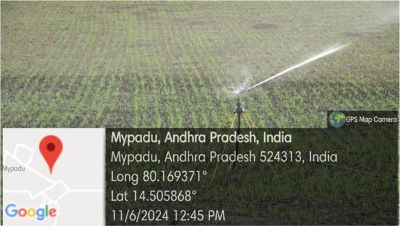
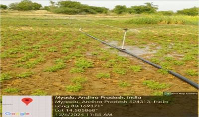

WEEKLY REPORT
WEEK- 5 (From 10-06-24 to 15-06-24)
Objective of the Activity Done: Utilization Of Electricity by Farmers and Related Issues
Detailed Report:
Day 1:
-
- >On this day of our survey, we also observed another type of irrigation method called “Sprinkle irrigation”.
- >It is a water sprinkler device used to irrigate landscapes, crops through pipes and sprinklers.
- >Water is pumped through the pipes and distributed by the sprinklers over the irrigation area.
Day 2:
- >We surveyed about the types of sprinkle irrigation used in different conditions.
- >Centre pivot for large scale agriculture, micro sprinkler for small areas, and lateral pivot for rectangular areas.
Day 3:
- >The advantages we came to know are water is uniformly distributed, flexibility in soil, and saves more time and labour cost.
- >Due to these advantages in further this system may increase more and reduce manual working.
Day 4:
- >Including advantages also there are disadvantages using this system.
- >There is water loss, high cost for installation and maintenance, and large energy consumption is required.
Day 5:
- >We observed the crops grown under this system and started surveying about the crops grown.
- >They grow cereals like wheat, vegetables like carrots, and others.
Day 6:
- As a part of final day of the week-5:
- >At last we asked them about how much electricity is used for this system.
- >Based on the size of the area the usage of electricity is required.
- >On average it consumes 1200 watts per hour and it runs averagely 30-60 min per zone.

